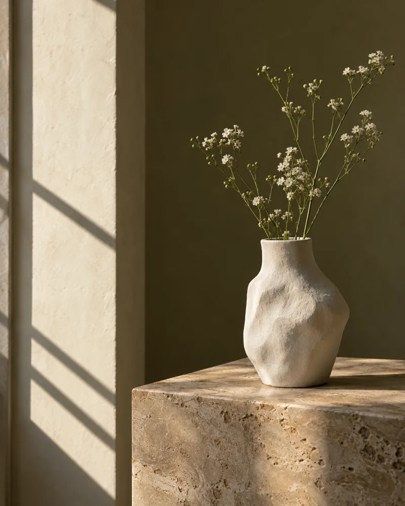

Social media
Useful for reaching people.
LEGIT OFFICIAL SITE
A Digital Solution by SENZ
Create your own professional place online—built around who you are, what you do, and how you want people to experience you.
Website rental for freelancers and startups—and a place for your personal presence, business or organization. Start with one focused page. Availability, scope and recurring fees are confirmed before you commit.
Stories, photographs and the things I’m making.
EXPLORE MY WORK
Website rental means an ongoing service for your agreed website and hosting. You bring your identity and content; SENZ helps shape the setup. Your quote defines what is included and what happens when the service ends.
Find my setupSocial media is a useful place to be discovered and stay connected. Your website gives people a clear view of you, beyond the format of a profile or feed.
Useful for reaching people.
Built around what you want people to know and do.
Be found through a post, a search, a conversation or a QR code. Bring people to one place that explains who you are and what comes next.
One address for what matters.
You can want a website for yourself without running a business. Start with your purpose, then shape the experience around it.
Stories, photographs and the things I’m making.
EXPLORE MY WORKFor an individual who wants an official presence, with or without a business.
Possible starting sections:
Independent design, direction and visual storytelling.
VIEW SELECTED WORKFor freelancers, consultants, creators, artists and public-facing professionals.
Possible starting sections:
Objects, flowers and a little room to slow down.
EXPLORE THE COLLECTIONFor sellers, salons, restaurants and businesses that want their own customer destination.
Possible starting sections:
People, ideas and practical work moving together.
MEET OUR COMPANYFor companies and organizations presenting their purpose, people, services and projects.
Possible starting sections:
All examples are fictional design concepts, not SENZ client work or fixed templates. Your colors, typography, photography, content, navigation and calls to action are agreed around you.
Bring your essential information together. The current configuration is one page, shaped around your purpose. Availability and your final scope are confirmed before commitment.
Services, highlights, about, photos, FAQ, and contact details on one page that you write and edit
An inquiry form whose messages arrive in your inbox with a reference
A page title and description for search engines, a SENZ web address, and a QR code
A private authenticated preview before you confirm publication
Your quote brings the setup, recurring service and responsibilities together before you decide. No payment is collected on this page.
Request a rental quoteYou do not have to become a web designer. Tell SENZ what you need; we help turn it into a professional digital presence.
Find your setup and request a quote. SENZ checks availability and feasibility, then confirms your scope, total fees and proposed schedule before commitment.
After the agreement and verified payment where required, share your content and requirements. SENZ prepares your site and guides account setup when included.
Review the pages, content and contact paths. Agree corrections within your scope, then approve the site for activation.
Launch at the agreed available address. Follow your agreed support and renewal arrangements; manage eligible purchased tools through Senzapp only when activated.
A website shapes what people understand, notice and trust—and how easily they can act. SENZ brings strategic communications and digital solutions together, so the message and the experience work as one.
Your identity is yours. The agreement explains the service around it.
The message, page structure, presentation and route from interest to action, within your agreed scope.
Website rental is an ongoing service, not a blanket transfer of everything used to build it. The written agreement separates these responsibilities.
Tell SENZ if you already own a domain or would like one. The current website configuration uses a managed website address, subject to setup and availability. Automatic subdomains and custom-domain connection are not currently included; SENZ must review feasibility before offering them.
Registration, connection and renewals are not automatically included. Your quote must name the registered owner and who pays for and manages renewals. SENZ does not acquire your independently purchased domain by helping with it.
Agree this before starting. Your quote defines whether SENZ handles content changes, what update allowance and review rounds apply, how you request help and any additional fees. Unlimited updates or a particular response time are not assumed.
Self-management applies only to eligible tools activated for your account. In the current editor, changes to a published page appear immediately. Unpublish first when you need to work privately; there is no separate staged revision queue.
Before you commit, confirm the billing period, any minimum term, renewal method, notice required, outstanding charges and any refund terms. These are set by your written agreement, not by this page.
A hosted page may go offline when hosting or its licence ends. Confirm what content or data can be exported, the format, timing, assistance and any fees before ending the service. A complete transferable copy of SENZ software or design is not automatically included. Independent domain renewals remain separate.
Start with one useful page. The current website configuration does not include multi-page editing, a blog, arbitrary plugins, online ordering or payments. Tell SENZ what you need so feasibility and an appropriate alternative can be reviewed.
Booking, digital catalog, CRM and other SENZ products have separate scopes and readiness requirements. They are not automatically included, integrated or activated by a website rental. A simple portfolio or service introduction does not require a larger software package.
Your public website is what your audience sees. Senzapp is where an owner manages eligible purchased SENZ tools after those tools are ready and activated for the account.
An inquiry does not create an account, collect payment or unlock applications. SENZ confirms delivery readiness, your agreement, account access and any verified payment requirements before activation.
Share your purpose, short introduction, services or selected work, photographs you can use and preferred contact details. You can start the conversation before everything is ready. Copywriting, photography or wider communications work can be scoped separately.
SENZ proposes a delivery schedule after reviewing availability, the agreed work and your content. You review the site before initial publication. There is no fixed launch-time promise; content, feedback and requested changes affect the schedule.
You decide how your legitimate online presence should look, communicate and work within the supported configuration: your message, content, brand, section priorities and customer actions.
Applicable law, security, privacy, intellectual-property rights, acceptable-use rules, hosting limits, payment requirements and SENZ service terms still apply. This is not unrestricted hosting or a verification badge.
Personal, professional, business or company—tell us what your website needs to do.
Request a website quoteTell us what you want to build. SENZ will help determine the right setup.